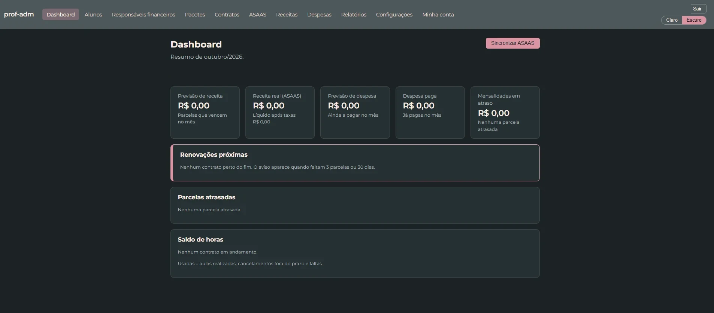
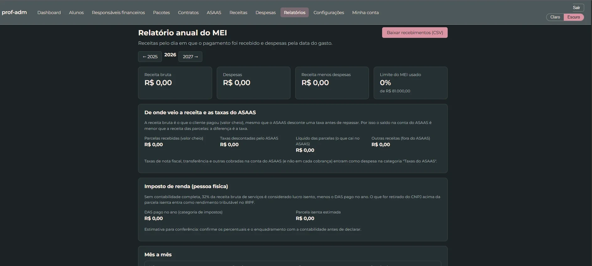

Contrato sem retrabalho
A matrícula gera o contrato em Google Docs e PDF, com adendos, renovação e cancelamento com multa.
Feito para quem vive de dar aula
Matrícula, contrato, cronograma de aulas, cobrança e financeiro em um só lugar, no lugar das planilhas, dos cadernos e das conversas de WhatsApp.
Quero ser avisado quando abrir para outros professoresEm uso diário por uma professora de inglês real.

A matrícula gera o contrato em Google Docs e PDF, com adendos, renovação e cancelamento com multa.
Cronograma gerado pela agenda do contrato, com reposições, aulas canceladas, crédito de horas e tolerância para atrasos.
Integração com o Asaas: pagamentos sincronizados, saldo, extrato e quem está em atraso.
Como funciona
Pessoa física ou jurídica, com validação de CPF/CNPJ.
Escolha o pacote e o parcelamento. O contrato e as parcelas saem prontos.
Veja o saldo de horas de cada aluno e o que já foi pago.

Financeiro
Entradas e despesas por categoria, forma de pagamento e taxas, reunidas em um relatório anual.
Monólito modular organizado por domínio, com deploy simples numa VPS Linux e HTTPS automático. O código-fonte é privado.
O ProfAdm está evoluindo para atender vários professores na mesma plataforma. Deixe seu contato e seja avisado.
Quero ser avisadoSua opinião conta
Conte como você controla alunos e pagamentos hoje. Isso ajuda a decidir o que construir primeiro.
Enviar sugestãoDesenvolvido por
Desenvolvedor Java e Flutter. Projeto do design à produção.